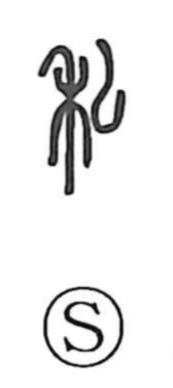

私

Uncategorized
Kun: watakushi, watashi, hisoka | On: shi
private ・ personal ・ i
Explanation
私 is a compound graph that joins 禾, a stalk of grain, with ム, the form of a plow. It pictures someone tilling among the grain with a plow, and originally denoted a farming person—household dependents or bond peasants within a family sphere. From this sense of what belongs to one’s own household, the character came to mean the private or personal, set in contrast to 公, the public realm. In social terms, 公 marks the sphere of authority and the ceremonial court, while 私 points to the individuals who follow that authority; hence 公私 expresses the relation between ruler and the ruled.